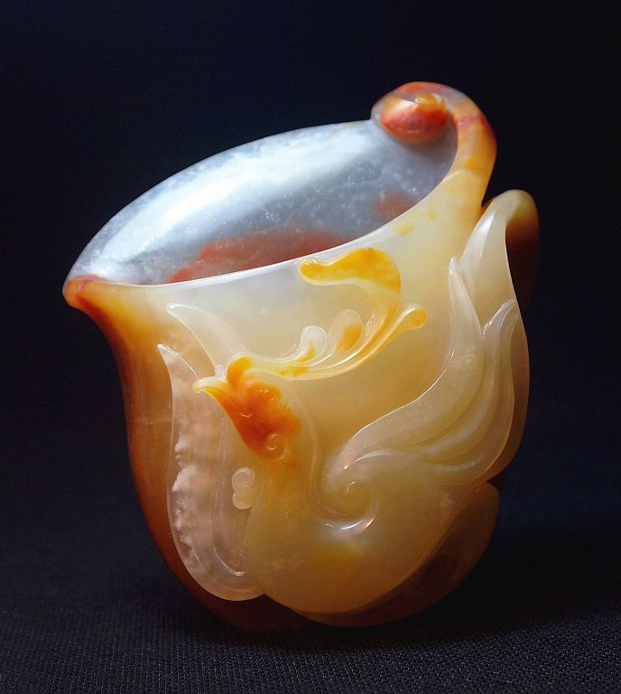
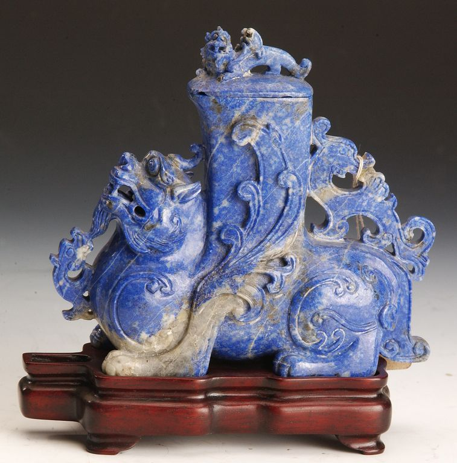

学校的核心是传播、交流、探索和创造。在我们的实训工作室里，融汇着传统与现代的思想，融合着自然和艺术的表现，探索着市场和创意的结合。我们的作品尺寸虽小，玉材也很普通，但这不妨碍我们追求至美，追求经典。不求材质高贵，但求艺术品位。因为我们时时自诫：琢玉不仅是一门手艺，也是一种文化，更是一种境界。 上海工艺美术职业学院的玉雕专业，沿1960年上海市工艺美术学校初建时就已开设，至今有50多年办学历史，育有众多人才，是上海乃至全国玉雕领域的摇篮之一，其中的出类拔萃者成为了玉雕艺术的专家和大师，引领着玉雕艺术发展的潮流，经师生几代人的努力，逐步形成了一些教学特点和作品风格： 继承传统: 悠久的中华文明是现代玉匠智慧和创造力的无尽源泉。我们知道了从哪里来，我们也清晰了朝哪里走。继承传统是我们教学的根本和基石，从中我们学习琢玉的技巧，玉器的形制和玉的文化，让传统的玉文化得以继承。 设计创意: 从传统走向现代是文明史进程的必然。融入现代生活，表现现代生活，从自然中汲取美的元素，从生活中激发创造的活力，一直是我们孜孜不倦的追求。尝过失败的苦恼，更多品味了收获的喜悦。我们还将努力，我们铭记先师们的教诲：琢玉当随时代！ 海派玉韵: 玉文化在学院传承着，不但学习琢玉的手艺，同时融汇着中外文化的交流；不同艺术元素的运用，传统与现代的交汇，有着工艺传承、文化交流和学术研究的意义。学院风玉雕在浩瀚的玉文化中是沧海一粟，但愿能为海派玉雕的传承和发展拂起一丝轻轻的玉风。 碧玉 大唐盛世 吴非澴
碧玉 玉领 李其然
砗磲 双喜临门 唐人杰
独山玉 双羊尊 赖毓琳
翡翠 荷塘蛙声 付跃慧
翡翠 佛手 杨子锐
翡翠 龙凤觥 唐蓓麟
翡翠《一剪梅》作者 唐蓓麟
翡翠-傲视群雄-杨子锐
贵翠 松鼠葡萄水盂 赵丕成
黑密玉 弧光闪闪 陈时毅
黑密玉 爵杯 王小波
黄料 李清照 徐慧如
黄料 仿古盉 张萍
黄料 四足方斝 唐蓓麟
黄龙玉 德宏瓶 华国津
黄龙玉 凤凰杯 赵智伟
黄龙玉 菱儿弯弯金琳
 黄龙玉 美人鱼 王海芷 黄龙玉 美人鱼 王海芷黄龙玉 蝶恋花 孙精神
黄龙玉 飞天 孙精神
黄龙玉 观音 陈日敏
黄龙玉 爵杯 谈首章
黄龙玉 龙舟 吴琼
黄龙玉 美人鱼 唐人杰
 黄龙玉 山乡夕阳 曹国卿 黄龙玉 山乡夕阳 曹国卿黄龙玉 双喜临门 杨兴燕
黄龙玉 心有灵犀一点通 作者 黄成
黄龙玉 莺歌凤舞 作者 马乃瑾
黄龙玉 鹰击长空 尤璐
黄龙玉 映日荷花别样红 华国津
黄龙玉 玉凤牡丹 王帅军
黄龙玉 玉龙 曹国卿
金星 人欢鱼跃 王惠民
金星 装不下 张雷
 金星石 观音菩萨 张雷 金星石 观音菩萨 张雷绿密玉 瓜瓶 陈国辉
玛瑙 笛仙 沈君曼
玛瑙 猴桃水盂 赵丕成
玛瑙 酒仙 王敏
玛瑙 鱼鹰 阴然
青花 玉狐梦影 赵丕成
青金石 仿古兽瓶 张萍
青金石 玉龙 杨子锐
天籽红玉系列 张敏
天籽墨玉系列 张敏
新疆彩玉-国色天香-赵丕成
岫岩玉 春燕 赵丕成
岫岩玉 祝福 卢银侠
岫岩玉 蚌仙引凤 徐勤
 岫岩玉 出击 王敏 岫岩玉 出击 王敏岫岩玉 吹萧引凤 王志贤
岫岩玉 敦煌舞女 王帅军
岫岩玉 凤凰熏香 陈连毅
岫岩玉 佛手 胡莎
岫岩玉 荷塘鹭鸶 陆永福
岫岩玉 爵杯 卢银侠
岫岩玉 立与卧 李霜
岫岩玉 灵芝水盂 和树华
岫岩玉 龙凤 李业 吴非澴
岫岩玉 龙凤觥 阴然
岫岩玉 神仙鱼 唐蓓麟
岫岩玉 双链花篮 徐敏
岫岩玉 玉凤 陈梦蓝
岫岩玉 玉凤 曹国卿
岫岩玉 玉壶 吴非澴
|
|
| 珠宝设计网站 中国珠宝设计网 国际珠宝网 傲宝网 BACCARAT |
雕塑设计网站 中国雕塑网 |
玉器图库 一些挂件 一些手把件 一些摆件 |
玉器设计与雕刻大赛 上海玉器雕刻神功奖 上海玉器雕刻玉龙奖 北京玉器雕刻天工奖 |
玉器设计与工艺发展动态 玉器设计与工艺过去 玉器设计与工艺现在 玉器设计与工艺未来 |